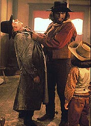
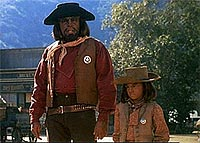
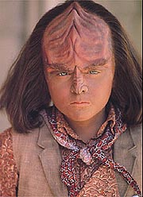
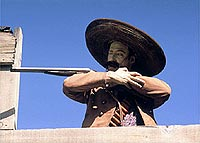
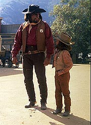

|
MANCHETE
DO EPISDIO
Outra
histria de holodeck: premissa
velha, mas com excelente execuo
Episdio
anterior | Prximo
episdio
Sinopse:
Data Estelar: 46271.5.
Um raro perodo de folga d tripulao da Enterprise uma
chance de investir em seus hobbies. Geordi conduz um experimento com
Data, conectando o andride ao computador da nave para ver se ele
pode ser usado como um backup para casos de emergncia. Enquanto
isso, Worf, Alexander e Troi se transportam para a Dakota do Sul do
sculo 19, onde eles participam de uma fantasia de holodeck
envolvendo um criminoso sanguinrio chamado Eli Hollander. Worf no
tem dificuldades para prender Eli, com a ajuda providencial da
conselheira.
 Na Enterprise, as
investidas da tripulao so interrompidas por pequenos defeitos
no sistema de computador. Quando trechos de um poema de Data
substituem o roteiro de uma pea que Beverly Crusher estava
ensaiando com Riker, Geordi percebe que os problemas podem ser
resultado dos experimentos com Data. Simultaneamente, no holodeck,
Alexander sequestrado pelos capangas de Eli. Assustado, ele tenta
interromper o programa, mas seu comando ignorado. Em vez disso,
ele levado ao pai de Eli, Frank --um homem cuja aparncia idntica
de Data.
Worf logo vai em busca de seu filho, quando encontra Frank no saloon.
Ele presume que Frank simplesmente Data brincando tambm, mas
quando seu comportamento violento se torna suspeito, Worf ordena que
o computador interrompa a simulao. Como no caso de Alexander,
nada acontece, e Worf percebe que algo est terrivelmente errado.
Ele foge do saloon, levando um tiro de raspo no brao, e conta a
Troi que o computador no est funcionando corretamente e que
Alexander foi raptado e est em perigo. Mas, antes que eles possam
fazer outro movimento, os dois descobrem que seu prisioneiro, Eli,
agora tem tambm a aparncia de Data.
Troi aponta que, j que o cenrio um programa de holodeck, h
salvaguardas embutidas. Embora eles no possam terminar o programa
por comando de voz, ele terminar sozinho se eles chegarem ao fim
da histria. Sem outra escolha, Worf faz um acordo com Frank para
trocar Eli por seu filho, na esperana de que isso leve o programa
a seu final.
 Mas,
enquanto gasta seu tempo com Frank e Eli, Troi faz uma descoberta
terrvel. Os dois homens no s se parecem com Data, como tm as
habilidades sobre-humanas do andride. Se um duelo ocorrer entre
Worf e Frank, o Klingon no ter nenhuma chance de vencer. Ao
mesmo tempo, a tripulao snior se rene para discutir os
problemas e fica surpresa ao descobrir Data se expressando com um
sotaque do Velho Oeste.
Geordi percebe que partes da memria de Data foram cruzadas com o
banco de dados recreativo do computador. Enquanto o engenheiro tenta
corrigir o problema, Worf se prepara para seu confronto com Frank. O
pai do criminoso chega e liberta Alexander como prometido, mas ento
ele e seus capangas atiram em Worf. Por sorte, o Klingon estava
preparado, ativando um campo de fora ao redor de seu corpo que
deflete as balas.
Os dois foras-da-lei andrides so derrotados, e Worf ordena que
eles deixem a cidade. Entretanto, o programa no termina antes que
Annie, a dona do saloon, que agora tambm tem o rosto de Data,
possa dar um grande abrao em um constrangido sherife Worf.
Comentrios:
 Mais
uma aventura de holodeck inspirada por um ambiente histrico. Mais
uma falha no computador. Mais tripulantes presos na simulao, sem
as salvaguardas de segurana. A nica forma de acabar com o
pesadelo levar o programa ao seu final.
Ok, a premissa to velha quanto A Nova Gerao. Mas so
os detalhes especficos de mais essa aventura "holodeck/defeito
no computador" que fazem de "A Fistful of Datas"
um episdio to interessante e agradvel.
Primeiro, trata-se de um bom tratamento da relao entre Worf e
seu filho, Alexander. H um potencial latente em vermos como o rgido
Klingon lida com as necessidades de seu filho que, aliengena ou no,
somente uma criana. J aqui vemos uma aproximao maior de
Deanna Troi, que faz do "divertimento" de Worf com seu
filho uma desculpa para estar com os dois. J nascia nos produtores
a inteno de alinhar Deanna e Worf, num
"pseudo-relacionamento" que quase ficaria srio na stima
temporada da srie.
Apesar de a relao supostamente amorosa entre Worf e Troi nunca
ter sido bem explorada, a aproximao da conselheira aqui foi bem
propcia --principalmente por dar personagem, que via de regra no
tem nada de importante para fazer, um papel importante na trama,
ajudando o sherife e seu ajudante a "limpar" o Velho
Oeste.
 O
tratamento dado a Worf no episdio bastante consistente.
legal acompanharmos a transio entre o oficial que lamenta no
ter nenhum servio que o tire da "enrascada" de brincar
com seu filho e o pai que realmente aprecia a diverso que teve com
seu rapaz. Tambm curioso vermos a aplicao de seus valores
Klingons ao Velho Oeste, especialmente levando em conta o quanto ele
foi capaz de apreciar aquela poca brbara da histria humana.
Agora, nada no episdio capaz de substituir a fascinao que
os mltiplos Datas propiciam audincia. No s por
adicionarem um elemento de perigo diferenciado velha premissa do
"holodeck defeituoso", mas principalmente por permitirem a
Brent Spiner um exerccio pleno de suas incrveis habilidades de
atuao. O ator nos oferece trs personagens diferentes (alm de
seu habitual andride e das mudanas que ocorrem nele aps a
mistureba com o computador da Enterprise), e todos so igualmente
bem atuados e fascinantes.
J no a primeira vez que Spiner demonstra suas habilidades
para mltiplos papis (em "Datalore"
ele j interpretou seu irmo gmeo Lore, algo que ele repetir
em "Descent", e somou a ele o criador dos dois andrides,
Noonien Soong, em "Brothers"),
mas provavelmente essa a que permite mais flexibilidade ao ator.
E ele no decepciona.
Na soma de tudo, o episdio acaba sendo uma excelente combinao
de desenvolvimento de personagens (especialmente para Worf e
Alexander) somado premissa de um episdio ambientado no Velho
Oeste. Jornada j havia tentado isso uma vez antes em "Spectre
of the Gun", da Srie Clssica, mas os dois
segmentos mantm tons absolutamente distintos, evitando que o da Nova
Gerao reproduza elementos j vistos no seriado original.
 Enquanto o episdio
clssico buscou um tom mais surreal da situao de Velho Oeste
(at por uma razo de oramento limitado), aqui a idia
reproduzir risca o estilo dos filmes Western americanos --com a
diferena de que h Klingons, andrides e campos de fora na
histria.
Nesse sentido, interessante notar todo o esforo da produo
em criar o ambiente do Velo Oeste, efeito que comea no prprio
nome do episdio (uma pardia de um filme de Clint Eastwood) e
termina no fechamento do segmento, com uma Enterprise viajando na
direo de um pr-do-sol, uma bvia e criativa referncia ao
estilo Western.
A direo de Patrick Stewart faz um bom trabalho de reproduzir o
ambiente do sculo 19, ajudado, claro, pela efetiva cidade
cenogrfica usada pelo episdio. sempre agradvel quando a ao
no se passa em cavernas e em salas, como costuma ser em Jornada
nas Estrelas. No fim das contas, gostando de filmes de bang-bang
ou no, o telespectador no sai desapontado.
Citaes:
Alexander - "No, no, no!
Computer, freeze program."
("No, no, no! Computador, congelar programa.")
Worf - "What is wrong?"
("O que est errado?")
Alexander - "That was too easy! It has to be harder to beat
the bad guys. Otherwise it's no fun. Computer, increase program
difficulty to level 4."
("Isso foi fcil demais! Tem de ser mais difcil vencer os
viles. Seno no tem graa. Computador, eleve a dificuldade do
programa para o nvel 4.")
Data - "Feline supplement 127. Spot, I have formulated a new
mixture of food, specifically designed for your highly selective
tastes."
("Suplemento felino 127. Spot, eu formulei uma nova mistura de
comida, especialmente projetada para seu gosto altamente
seletivo.")
Spot - "Miaw."
("Miau.")
Data - "I find it extremely difficult to predict what you
will find acceptable. Perhaps hunger will compel you to try it
again."
("Eu vejo que extremamente difcil prever o que voc achar
aceitvel. Talvez a fome o convena a tentar novamente.")
Trivia:
 O episdio foi dirigido por Patrick Stewart e escrito por Brannon
Braga. "Eu nunca fui f de filmes western", diz Braga.
"Quanto mais Patrick Stewart, um cara britnico de
carteirinha. Mesmo assim saiu um grande episdio", completa
Braga.
O episdio foi dirigido por Patrick Stewart e escrito por Brannon
Braga. "Eu nunca fui f de filmes western", diz Braga.
"Quanto mais Patrick Stewart, um cara britnico de
carteirinha. Mesmo assim saiu um grande episdio", completa
Braga.
O ttulo do episdio foi inspirado no filme "A Fitsful of
Dollars", que contava com Clint Eastwood.
As cenas externas foram filmadas no "Western Street", nos
estdios Warner Bros, e as cenas internas no galpo 16 da
Paramount.
Ficha
tcnica:
Histria de Robert Hewitt
Wolfe
Roteiro de Robert Hewitt Wolfe e Brannon Braga
Direo de Patrick Stewart
Exibido em 09/11/1992
Produo: 134
Elenco:
Patrick Stewart como
Jean-Luc Picard
Jonathan Frakes como William Thomas Riker
Brent Spiner como Data
LeVar Burton como Geordi La Forge
Michael Dorn como Worf
Gates McFadden como Beverly Crusher
Marina Sirtis como Deanna Troi
Elenco convidado:
John Pyper-Ferguson
como Eli Hollander
Joy Garrett como Annie
Jorge Cervera como Bandito
Majel Barrett-Roddenberry como a voz do computador
Brian Bonsall como Alexander
Episdio
anterior | Prximo
episdio
|